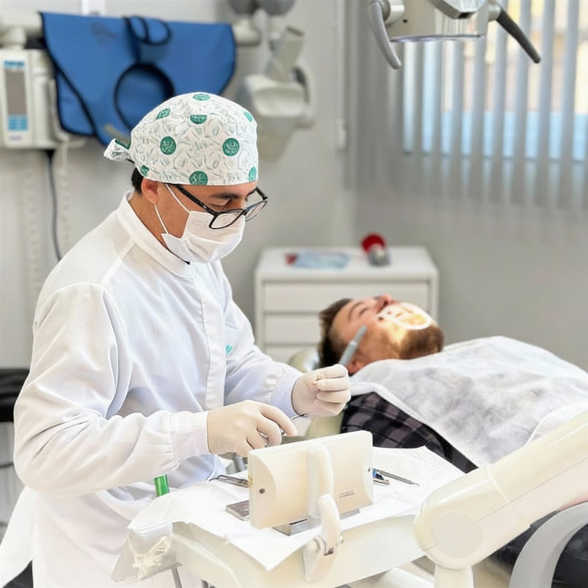
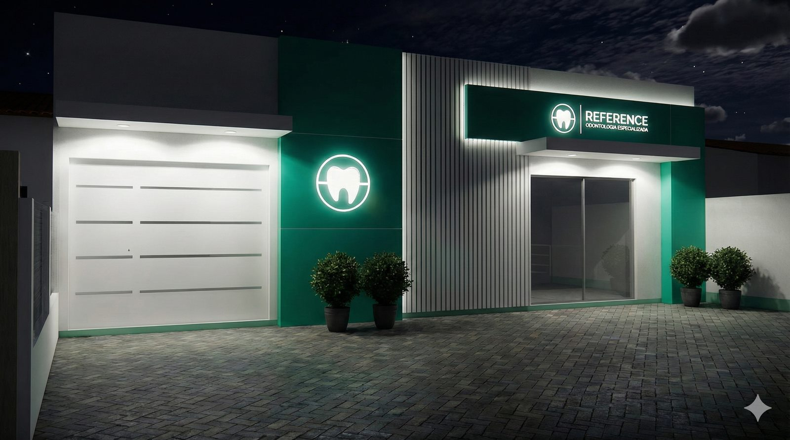

Implantes Dentários
Reposição segura e duradoura de dentes perdidos, devolvendo estética e função mastigatória.
Oferecemos soluções em um ambiente acolhedor. Nosso foco absoluto é o seu conforto e segurança, garantindo um tratamento transparente e a plena satisfação com o seu novo sorriso.
Agende sua avaliaçãoTorres · RS

Soluções completas para saúde, estética e funcionalidade do seu sorriso.
Reposição segura e duradoura de dentes perdidos, devolvendo estética e função mastigatória.
Reabilitação oral personalizada para conforto, harmonia e naturalidade.
Procedimentos que equilibram estética facial e sorriso com naturalidade.
Correção do alinhamento dentário e da mordida com planejamento personalizado.
Atendimento acolhedor para crianças, focado em prevenção e cuidado.
Procedimentos realizados com segurança, precisão e acompanhamento completo.

A Reference Odonto é uma clínica odontológica dedicada a oferecer tratamentos completos, modernos e personalizados, sempre priorizando a saúde, a estética e o bem-estar de cada paciente.
Atuamos com foco em excelência clínica, tecnologia atualizada e um atendimento humanizado, criando uma experiência segura e confortável em todas as etapas do tratamento. Nossa equipe é formada por profissionais qualificados, preparados para atender desde procedimentos preventivos até reabilitações orais avançadas.
Mais do que cuidar de dentes, cuidamos de pessoas. Cada consulta é planejada de forma individualizada, respeitando as necessidades, expectativas e objetivos de cada paciente, para resultados duradouros e naturais.
Na Reference Odonto, seu sorriso é tratado como referência.
Agendar consulta


Nosso compromisso é oferecer uma odontologia de alto padrão, unindo experiência clínica, tecnologia de ponta e um atendimento humanizado. Cada detalhe é pensado para proporcionar conforto, segurança e resultados duradouros.
Atendimento individualizado com foco no conforto, empatia e bem-estar do paciente.
Equipamentos modernos para diagnósticos precisos e tratamentos mais seguros.
Horários flexíveis e processos eficientes, respeitando seu tempo.
Excelência clínica e compromisso com resultados estéticos e funcionais.

Reference Odonto, perto de você.

Bairro Stan – R. Pará, 1135 – Stan
Torres – RS, 95560-000
Encontre aqui as respostas para as dúvidas mais comuns sobre nossos tratamentos e o funcionamento da nossa clínica.
Oferecemos um atendimento multidisciplinar completo, incluindo odontologia estética (lentes e clareamento), implantodontia, ortodontia avançada, harmonização facial e odontopediatria, sempre com foco no conforto e bem-estar do paciente.
Os agendamentos podem ser feitos via WhatsApp, telefone ou pelo nosso site. Facilitamos o seu tratamento com diversas formas de pagamento, incluindo cartões de crédito com parcelamento, dinheiro e pix.
Entre em contato imediatamente com o nosso canal de atendimento prioritário. Reservamos horários diários na agenda para garantir que casos de dor ou traumas sejam atendidos com a máxima agilidade.
Recomendamos visitas preventivas a cada 6 meses. Esse intervalo é fundamental para a remoção de tártaro e placa bacteriana, prevenindo problemas mais graves como cáries e doenças gengivais.
Sim, investimos em tecnologia de ponta, como anestesia computadorizada e sedação consciente, para garantir que sua experiência seja o mais tranquila, indolor e segura possível.